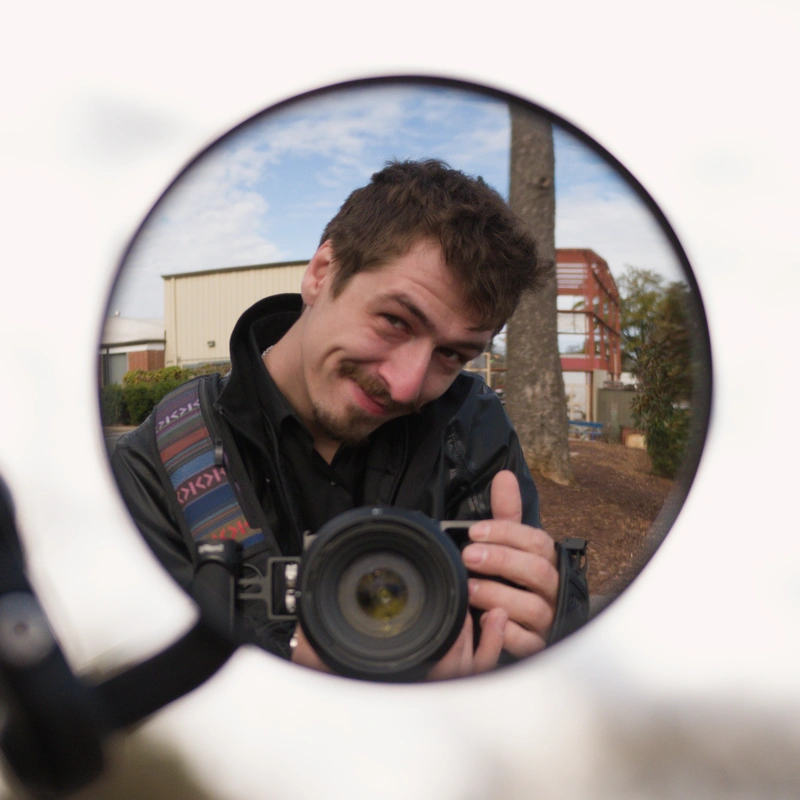

Introduction
Daniel C. "Cole" Dorazio ~ Daring Dragon

I was born and raised in Charlotte and I love anything related to technology. My main interests are drones, cameras, radios, soldering, and 3D printing. I love to build things for practical use cases and create media that people can enjoy.
- Personal Background: I am Italian and have a large Italian family scattered around the US.
- Professional Background: At the moment for work I sell motorcycle gear, parts, and accessories.
- Academic Background: Associates in Welding, working on my Bachelors in CS.
- Primary Work Computer: Custom-built desktop computer running Ubuntu Desktop 24.04 LTS.
- Primary Work Location: Cycle Gear.
- Alternate Computer & Location: Windows 11 ASUS Laptop, and at the coffee shop near me.
-
Courses I'm Taking, & Why:
- ITCS 3216 - Intro to Cognitive Science: Another credit toward my final degree.
- ITIS 4350 - Design Prototyping: Another step toward my final degree.
- ITIS 3135 - Front End Web Application Development: Relevant to the front end development I like to do in my personal time. And also for my degree.
- Funny/Interesting Item to Remember Me by: I have played trumpet at Carnegie Hall.
- I'd also Like to Share: @cyberflightstudios on Instagram, YouTube, and TikTok. My business website is also live and I will be updating it as I learn more from this class this semester. It is technically a work in progress this month. Cyberflight Studios
“Where must we go, we who wander this wasteland, in search of our better selves?”
- Mad Max: Fury Road